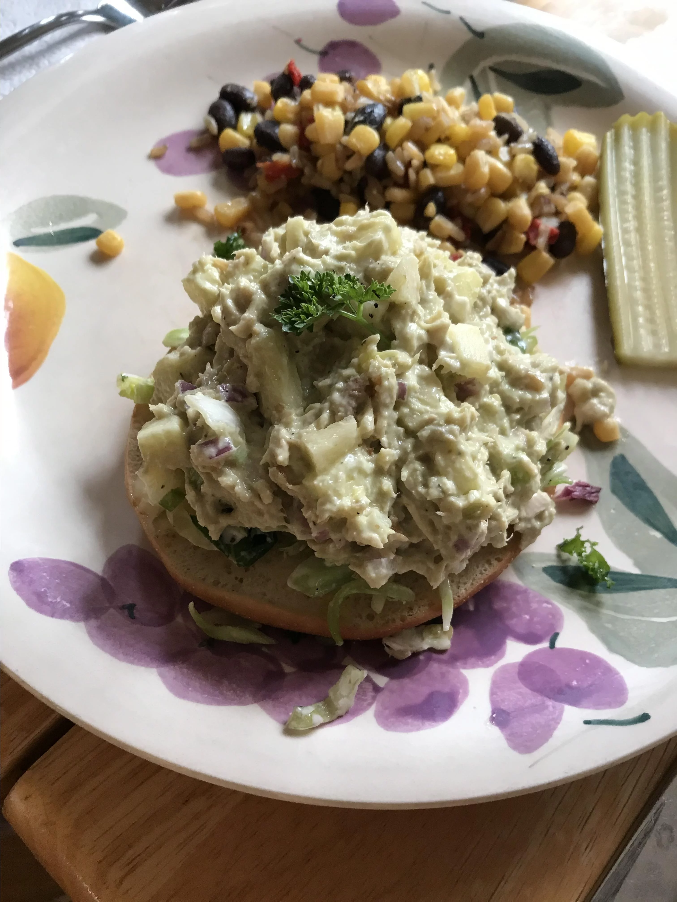

Avocado Tuna Salad
Great tuna avocado salad as a side dish or
meal. Serve on toasted bread (gluten-free if needed),
on top of greens, or enjoy it all by itself.

Ingredients
- 1 ripe avocado
- 2 (5 ounce) cans flaked light tuna
- 1/2 red apple , chopped
- 1/2 cup chopped red onion
- 1/2 cup chopped celery
- 1/4 cup chopped toasted walnuts
- 2 tablespoons mayonnaise
- 1 tablespoon pickle juice
- 1 teaspoon dried dill weed
- 1/2 teaspoon Dijon mustard
- 1/4 teaspoon ground cumin
- salt and pepper to taste
Steps
- Cut avocado in half
- oop out the flesh into a large bowl,
and mash avocado with the back of a fork or potato masher
- Add tuna, apple, onion, celery, toasted walnuts,
mayonnaise, pickle juice, dill, Dijon mustard,
cumin, salt, and pepper.
- mix well.
- Enjoy with a slice of bread or on its own :D